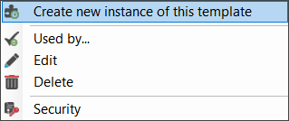
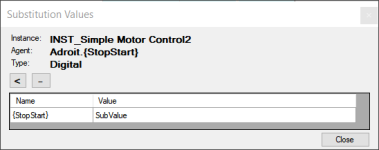

When you have created a template for an object, you can create any number of instances of the object. You can name each instance and specify the process values that uniquely configure it by using the assigned predefined value substitutions.
You can also choose to immediately deploy the instance, fully or partially, or deploy it at a later time.
Display the Create New Instance configuration dialog for the required object instance:
Select the required SmartUI Server in the Enterprise Manager tab.


 button.
button.  and expand the necessary node
and expand the necessary node  .
.For more information about the Default context of the Context View window, see Editing the Default context.
 or any child template that is listed in the Template hierarchy tree.
or any child template that is listed in the Template hierarchy tree. button to clear the custom attributes that are specified for the current profile.
button to clear the custom attributes that are specified for the current profile.Tip: Typing in the first letter of an existing attribute immediately inserts the full text of this attribute name.
The Object Model datasource then uses the specified attributes to configure the Context View window automatically.
Note: You can only delete the additional instance-specific attributes that you add.
Click Next, once you are satisfied with the instance name and its specified attributes.
Click Cancel, if you selected the incorrect template.
In this step, you specify and configure the agents that are associated with each template referenced by this object instance.
 icon, it is an indication that some substitution values require insertion. icon is displayed to open the Substitution Values dialog.
icon, it is an indication that some substitution values require insertion. icon is displayed to open the Substitution Values dialog.
icon.
Once an agent name is specified, then use the Configuration pane below the table to configure its Scanning, Logging, Alarming, and Slots as predefined in the templates by selecting the relevant tabs.
icons with valid values and have configured each of the agents appropriately.In this step, you specify and configure the devices that each template uses to scan their values. These devices are listed in the Devices table.
This step only applies if one or more DBLog agents are selected for this template.
This step is typically only required when you have changed the substitution names when creating the instance and the name of the substitution used in the SCADA Configuration step differs from the name used in the referenced wizard.
icon. icon and then the Value cell in the Substitutions table below and type in the required value.  . icons with their required substitution values.
. icons with their required substitution values.This is the final step, which lets you deploy the instance of this object using the settings that you have specified.
In the case of a partially deployed or non-deployed instance, you can deploy it fully or partially at a later stage.
For more information about later deployment, see Deploying an Object Instance.
 From the Object Model datasource in the Enterprise Manager
From the Object Model datasource in the Enterprise Manager